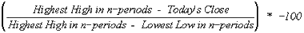

William's % R
Overview
Williams %R (pronounced "percent R") is a momentum indicator that measures overbought/oversold levels. Williams %R was developed by Larry Williams.
Interpretation
The interpretation of Williams' %R is very similar to that of the Stochastic Oscillator (page 244) except that %R is plotted upside-down and the Stochastic Oscillator has internal smoothing.
To display the Williams %R indicator on an upside-down scale, it is usually plotted using negative values (e.g., -20%). For the purpose of analysis and discussion, simply ignore the negative symbols.
Readings in the range of 80 to 100% indicate that the security is oversold while readings in the 0 to 20% range suggest that it is overbought.
As with all overbought/oversold indicators, it is best to wait for the security's price to change direction before placing your trades. For example, if an overbought/oversold indicator (such as the Stochastic Oscillator or Williams' %R) is showing an overbought condition, it is wise to wait for the security's price to turn down before selling the security. (The MACD is a good indicator to monitor change in a security's price.) It is not unusual for overbought/oversold indicators to remain in an overbought/oversold condition for a long time period as the security's price continues to climb/fall. Selling simply because the security appears overbought may take you out of the security long before its price shows signs of deterioration.
An interesting phenomena of the %R indicator is its uncanny ability to anticipate a reversal in the underlying security's price. The indicator almost always forms a peak and turns down a few days before the security's price peaks and turns down. Likewise, %R usually creates a trough and turns up a few days before the security's price turns up.
Example
The following chart shows the OEX index and its 14-day Williams' %R. I drew "buy" arrows each time the %R formed a trough below 80%. You can see that in almost every case this occurred one or two days before the prices bottomed.

Calculation
The formula used to calculate Williams' %R is similar to the Stochastic Oscillator:
